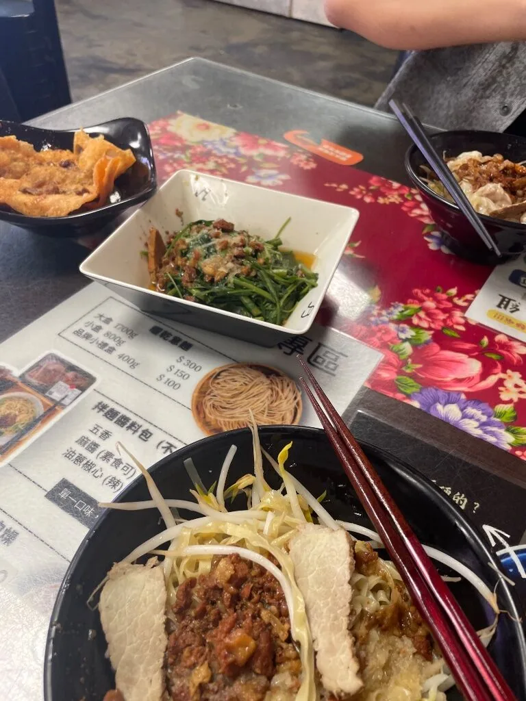
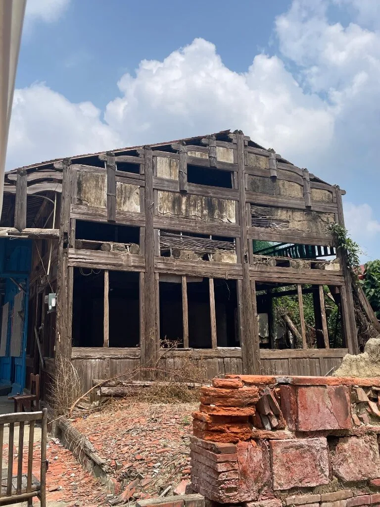
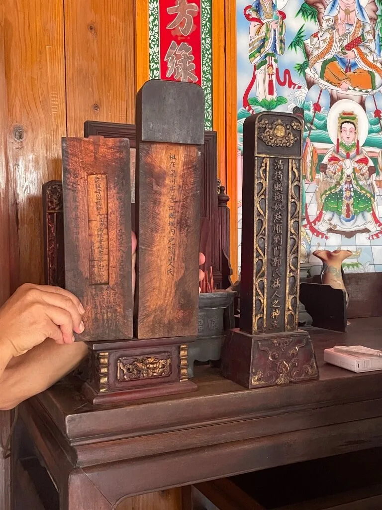
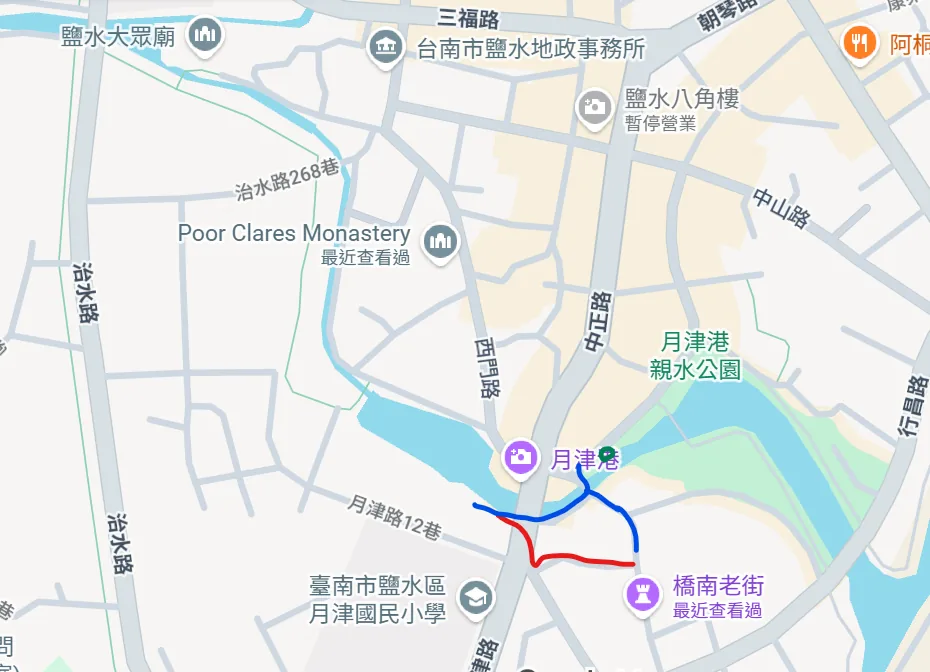
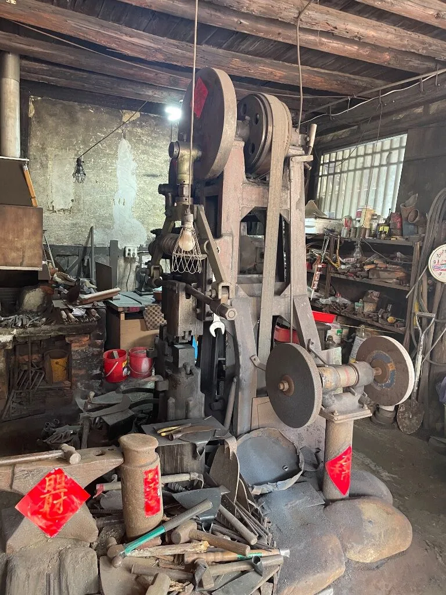
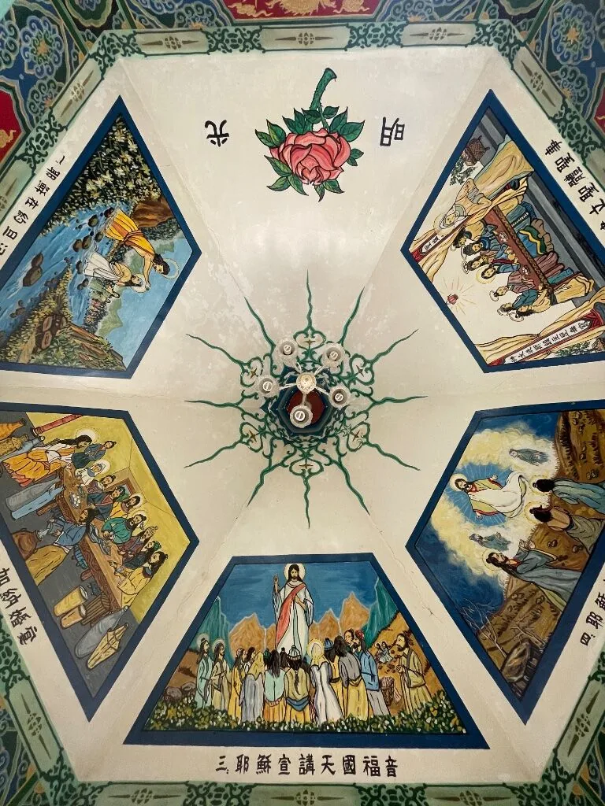
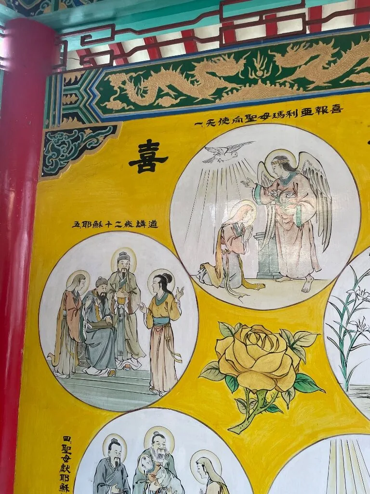

A One-Day Trip to Yanshui, Tainan: Piecing Together Life 100 Years Ago from What Still Remains
First Tainan, second Lukang, third Monga, fourth Yuejin Port. (An old saying about the most prosperous ports of old Taiwan.)
Before setting off, I figured Yanshui was a sleepy country town with not much in it. All I could think of was the "Yanshui Beehive Fireworks" and the "Yuejin Port Lantern Festival", which has become well known in recent years. It turns out there's a lot more history here than I expected. You could plan a one-day or even a two-day trip, and it's not just a relaxed stroll: you come away with quite a lot.
I made this trip with my friend K, who was visiting Tainan. He took the train north and I rode my scooter south, and we met at Xinying Station. After picking him up, it was about a 15-minute ride to Yanshui. It was a Monday, so a few of the main sights were closed, but there was still plenty we could visit. The farthest distance between the main sights is only a 15-minute walk, so once the scooter was parked, we went everywhere on foot all day.
Yanshui was actually super prosperous once!
In the Qing dynasty, Yanshui thrived thanks to Yuejin Port and its busy merchant-ship trade, mainly exporting sugar. Around 1850 the harbour began to silt up and Yanshui gradually declined. In 1885 an epidemic hit (this is the origin of the Yanshui Beehive Fireworks; scientifically speaking, the fireworks really do have a disinfecting effect). Then in the Japanese colonial period, when the railway was going to be built in 1905, the local gentry thought a railway would be bad for Yanshui and ruin its feng shui, so the line was routed through neighbouring Xinying instead. Whoops! So Yanshui didn't decline only because it lost its harbour; it was a chain of causes.
We learned this background little by little as we walked around.
Yanshui Cattle Market (鹽水牛墟): sorry, not recommended~
A "niuxu" (牛墟) is a market where cattle used to be traded. Only three are left in Taiwan, and they open in rotation each month by the last digit of the date: Yanshui (dates ending in 1, 4, 7), Shanhua (2, 5, 8) and Beigang (3, 6, 9).
I had only been to the one in Beigang, many times. What made me pick Yanshui this time was simply finding out that it's one of the cattle markets and that the timing worked. I already knew Yanshui's is the smallest of the three, and that's totally fine, but the thing is, walking around it felt like an ordinary morning market, with just a few stalls of farm tools and a couple of rare ones, like one selling soft-shelled turtles, the exotic-creature(?) kind. So I was disappointed... QQ
Fan Nan Yanshui Yi Mian (范楠鹽水意麵)
I walked past it by accident while cutting through small alleys. Inside a space that looks a lot like a sunroom, they were drying yi mian (意麵, the local noodles), which was pretty novel. It seems experiences and guided tours often bring people here, so it probably has some standing in the "Yanshui yi mian world".
A-Miao Yi Mian (阿妙意麵)
Picked at random. Perfectly edible.

Speaking of yi mian, the local grandpa we met later on Qiaonan Old Street said that today's yi mian is all about speed and cutting costs, so you can't eat the yi mian he remembers from his childhood anymore. And a guy working at a café recommended two places, one of which was A-Miao.
Yongcheng Theatre (永成戲院)
When it's open, it seems people come here for ice cream and to use the toilets.
But it was closed on Monday, so we could only peek in through the windows. On the side there's a display of antique projection equipment, and the wooden seats in the auditorium are the ones that have been used since the theatre opened.
In the Japanese colonial period this was a rice mill, which was bombed by the US military during WWII and rebuilt as a theatre after the war. It wasn't only for films, but also staged plays, and it was a gathering place for politicians, business people and celebrities. The theatre only closed in 2000! The city government restored it, and it reopened in 2014.
Qiaonan Old Street (橋南老街): a walking tour from a local grandpa
One of the most prosperous shopping streets in the Qing dynasty, and at the time a transport hub on the road to the towns north and south (you had to pass through here~). Today it's partly ruins and partly homes, and it's mostly for strolling and looking around.

The walls you see on the street, made of flat red bricks, were all imported from China: back then, merchant ships were afraid of being too light on the return trip and capsizing, so they carried red bricks as ballast ("pressing down the bottom of the boat"). Only rich people could use these imported bricks; those who weren't rich would lay red bricks on the surface and fill the inside with gravel and waste, a method called "dou qi" (斗砌); poor people built their houses with adobe bricks.
Here we met a resident grandpa. His old house is behind the first row of houses on the old street, and he'd applied for a Ministry of Culture subsidy to restore it. There was actually a sign saying visitors are welcome, but it happened to be blocked by a few bags of rubbish, and we nearly missed it too.
The grandpa kindly explained things to us:
- Qing-dynasty houses were long and narrow. For the old houses on this street, and his in particular: the first hall (一進) was the shop, the second the bedrooms, and the third the maids' quarters. (His house's first hall is gone; we only saw the second.)
- The ceilings are high, and the attic can be used for storage.
- The doors have a dragon side (the higher one) and a tiger side (the lower one).
- In the Qing dynasty only men could come to Taiwan to clear land, but one of the women ancestors in his family line came over and lived to 91. Her ancestral tablet is exquisite too, which shows how wealthy the family was.
- The timber used for the building was Fuzhou fir imported from China at the time. They say that during transport it was towed behind the ship, soaking in the water, so that all the insect eggs would die.

The grandpa was so kind that he also took us to see the routes that porters and ox carts once used to carry goods up to the street (I've roughly drawn the routes on the map):
- In the Qing period, the harbour of Yuejin Port was where Dazhong Temple stands now.
- The route the porters walked from the harbour is the red line, and the route the ox carts took from the harbour is the blue line (back then Xinglong Bridge, which connects to Qiaonan Old Street, had a wooden plank road, so ox carts could cross the bridge).
- Small boats came in along the canal and moored here to unload. (The green circle is the mooring point.)
- Zhongzheng Road today was only built in the Japanese colonial period; it didn't exist before.

Quanli Ironworks (泉利鐵店)
Right on Qiaonan Old Street and running for more than two hundred years. I only found out when I looked it up that it's probably the oldest blacksmith shop in Taiwan.
There's probably a space for displays and visits, but we didn't go in (we just nodded to the people inside from outside). The forge looks just like the staged setups you see in an exhibition space (which is a rude thing to think, because it's totally real XD), with an other-worldly sense of age.

Yanshui Hubi Temple (鹽水護庇宮)
I forget why the grandpa mentioned this place, but anyway here we were. You can tell the carving is excellent, and some of it was unusual, things I hadn't seen before. We happened to catch a staff member tidying up the incense ash, so I asked about the things arranged on the table, and he was very friendly, with the attitude of the kind of neighbour who'll chat with you about anything~
Across from Hubi Temple is a row of Baroque-style buildings (the kind you find in Dadaocheng), clearly built in the Japanese colonial period, on the road I mentioned earlier, Zhongzheng Road.
Yanshui Holy Spirit Church (鹽水天主聖神堂): highly recommended! My favourite of the trip!
As the name says, it's a Catholic church, but both the architecture and the murals are thoroughly localised: the priests, Jesus and other figures in the murals all wear Chinese-style clothing, which is so great! The architecture is completely in the style of a temple. I love this blend of East and West, so magical!


If you like travelling abroad and looking at churches, you have to come and see this unconventional church here in Taiwan! It also made me look things up, and I found out there are a few more churches in Taiwan that are localised like this, and I want to find chances to visit them in the future!
Right next to it is the "Monastery of the Poor Clares (聖佳蘭隱修院)". We couldn't go in, but this order (?) has only this one in Taiwan; it's the secluded, cut-off-from-the-world kind where you normally never run into a nun. Very unique, so look it up if you're curious.
Wangye Alley (王爺巷)
The alley is named after a hundred-year-old Wangye temple in it, which enshrines the Monkey King (齊天大聖) on the second floor.
In the past this was where rich people lived, and also an entertainment district (there used to be a big hotel, but there's nothing left to see now). The rich took turns paying someone to keep watch at night to guard against robbers. The café guy we met later told us that the small ledge sticking out at the side of the alley was where the night-watch lamp used to be placed. (We didn't notice it.)
Yanshui Octagonal Building (鹽水八角樓)
The mansion of the "Ye family", who got rich selling sugar locally. The Octagonal Building was the "third hall" of the original mansion (the first and second halls are both gone), and it's currently under renovation.
They say the Ye family used to look out over the harbour from the balcony, watching for "my family's ship coming into port^^", and also invited poets over to drink and compose poems. In the Japanese colonial period the Japanese used it as a command post.
Yuejin Guesthouse kAFE (月津客舍 kAFE)
Next to the "Yuejin Story House" (closed on Mondays), it's both a café and a visitor centre. The building is also an old house, and the guy working there kindly explained it to us:
- The first hall is the shop, followed by the kitchen and the courtyard (天井).
- The second hall is where guests were received and meetings held; the attic of the second hall also housed the women of the family (so they could peek at their future husbands when they visited).
- The third hall housed the elders of the family, the quietest part and the least disturbed.
This layout is a bit different from what we heard earlier on Qiaonan Old Street, and it was fun to compare the two.
We rested here for almost an hour at around two or three o'clock. The weather was great but also hot, and a huge amount of information had gone into our brains. (The people we met were so enthusiastic about showing us around, and we studied hard and asked lots of questions, haha.)
Xiude Worship Pavilion Plaza (修德拜亭廣場)
The only building left from the former site of "Xiude Zen Temple" (a religious building from the Japanese colonial period). Now there's a cool art installation there, quite eye-catching.
Next to it is a picture of the whole temple as it used to be, with lots of rooms and facilities. Today the area around this pavilion is lined with connected townhouses, so it's completely impossible to imagine. If it had been kept, it would have been so cool!
Yanshui Farmers' Association Farm-Fresh Shop (鹽水區農會意遊未盡農鮮直販所)
In terms of the route, we doubled back a bit to visit this farmers' association supermarket (at my eager request). It's small but modern, with a wide range, and you can buy products from farmers' associations all over Taiwan; there are also a few tables and chairs where you can take a short break.
Yanshui Dazhong Temple (鹽水大眾廟)
This spot is where the wharf of the old Yuejin Port was. The main deity is Lord Leifu (雷府千歲), who protects merchant ships, not the "yin temple" for wandering spirits that most people imagine when they hear the words "Dazhong Temple".
However, the grandpa mentioned earlier that some people used to die of illness on the ships and were dealt with (buried or burned?) around here, which makes sense near a harbour. That's why the elders didn't like children going near this area. When I looked it up, it said this has nothing to do with the temple.
Yanshui Martial Temple (鹽水武廟) (Yuegang Martial Temple)
The Yanshui Beehive Fireworks mainly originate here, and the temple is also the organiser. There's lots of space, and at the back left there's an area that looks like a food court: five or six food stalls in a row, a seating area, and karaoke machines, where lots of elderly people gathered in the afternoon to sing for fun. Very lively.
Heading home (?)
Looking back, I realised we'd actually been to this many places. Some we only passed by or quickly ticked off, but it really was tiring! For dinner we went to Xinying, found a restaurant, sat down properly, and rested, chatted and ate. (All day, apart from the break in the café, we hardly got to talk XD)
Yanshui turned out to be way richer than I expected. The grandpa and the café guy were the biggest highlights of the trip, and about 80% of the places we went to we only learned about, and decided to go to, because of them. (We were really chill at the start and did no homework at all, hahaha; we only discussed where to go next while eating lunch.) If we'd explored on our own, we'd definitely have just skimmed past everything, so a heartfelt thank-you to the local NPCs!
One slightly sad observation from this trip: we came across quite a few art installations that had been left untended. You can see that a lot of resources and projects had come in, but with no continuity and no follow-up maintenance, which felt like a shame~~
Last words
Every time, it's only when I'm putting it all into an article that I realise I took too few photos, or sloppy ones, and I regret it so much!!
KeywordsTainanYanshuiYuejin PortQiaonan Old StreetHoly Spirit ChurchOctagonal Buildingyi mian noodlescattle market